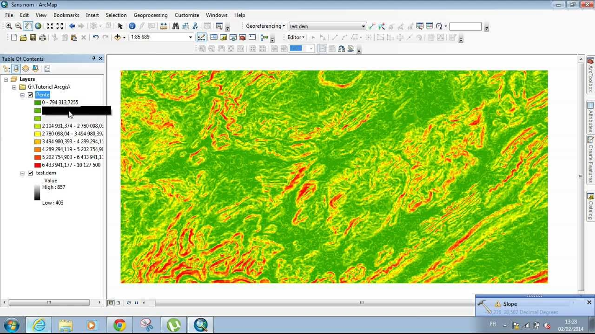
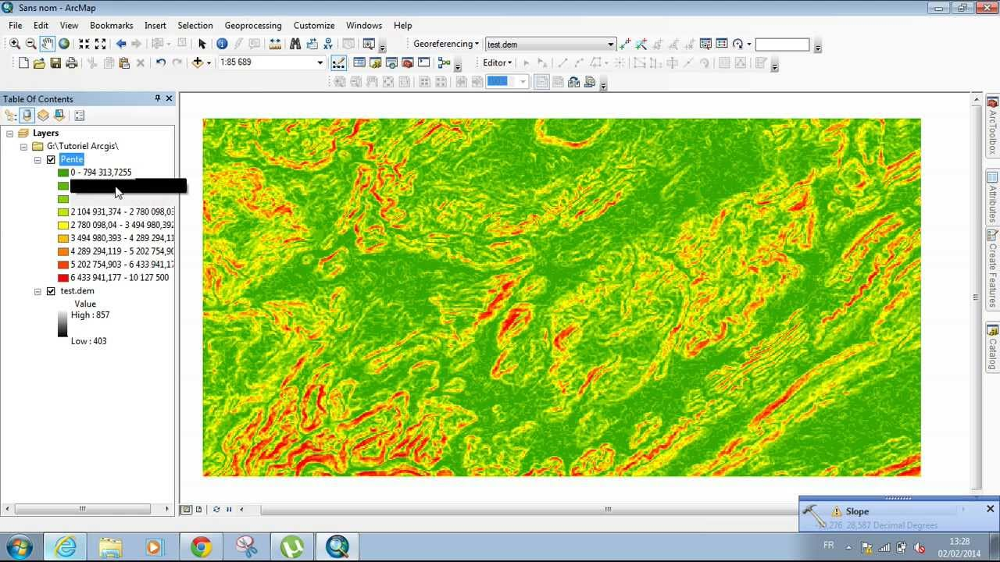

# [Open (data) science](#/1/)
# [(free and) open-source software](#/2/)
# and
# [doing GIS in code](#/3/)
# Open (data) science
## “A large proportion of practical quantitative work in geography relies on the analysis of data or on the running of simulation models. That analysis, and the results it generates, are the outcome of a process involving data verification, re-formatting, computer programming, modelling, data analysis and visualisation.” (page 607)
(from Harris R, D. O’Sullivan, M Gahegan, M Charlton, L Comber, P Longley, C Brunsdon, N Malleson, A Heppenstall, A Singleton, D Arribas-Bel and A Evans. 2017. [More bark than bytes? Reflections on 21+ years of geocomputation](https://journals.sagepub.com/doi/abs/10.1177/2399808317710132). *Environment and Planning B: Urban Analytics and City Science* **44**(4):598–617.)
## Data verification
## Reformatting
## Computer programming
## Modelling
## Data analysis
## Visualisation
# Reproducible research
## Requires that *all* of these stages be reproducible by others
## Why not also in ‘real-world’ settings?
## Perhaps even *especially* in public policy contexts?
# What is required?
## Open data
## Open publication
## *Open software*
# (Free and) open-source software
## (F)OSS
# Advantages
## Completely flexible and open-ended
## Repeatable
## Often quicker
# Resources
## [Spatial Data Science with R](https://rspatial.org/) website
## [R-spatial](https://www.r-spatial.org/projects/) list of resources
## Lovelace R, J Nowosad and J Münchow. 2019. [*Geocomputation with R*](https://geocompr.robinlovelace.net/). Boca Raton: Taylor & Francis.
## Brunsdon C and L Comber. 2015. [*An introduction to R for spatial analysis & mapping*](https://au.sagepub.com/en-gb/oce/an-introduction-to-r-for-spatial-analysis-and-mapping/book241031). Los Angeles: SAGE.


 
